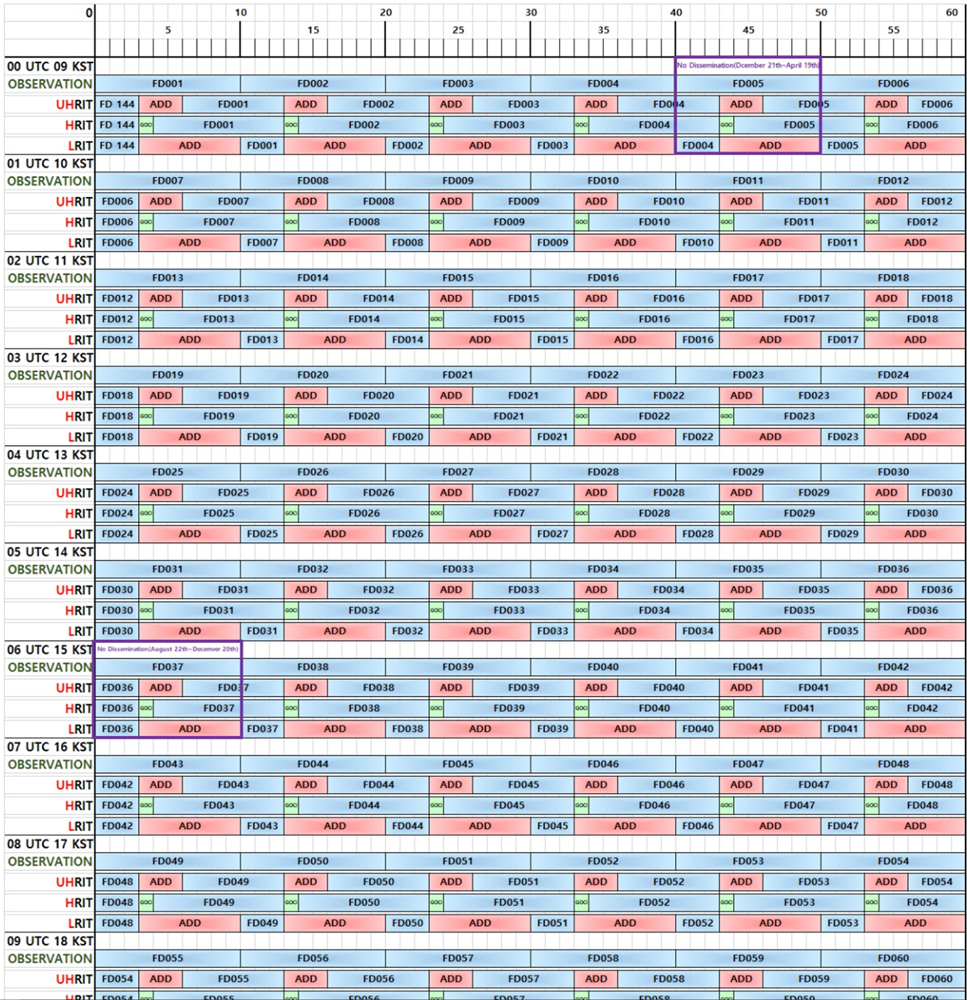

Broadcast Schedule
GK2A
GK2A AUI doesn't take images during maneuvering such as station
[Station Keeping ]
Wednesday and Thursday.(Time : Aperiodic)
[Wheel Offloading]
1. 20th April ~ 21th August 15:20 UTC(00:20 KST) / 15:20 ~ 15:30 ( 10 minutes )
2. 22th August ~ 20th December 06:00 UTC(15:00 KST) / 06:00 ~ 06:10 ( 10 minutes )
3. 21th December ~ 19th April 00:40 UTC(09:40 KST) / 09:40 ~ 09:50 ( 10 minutes )
